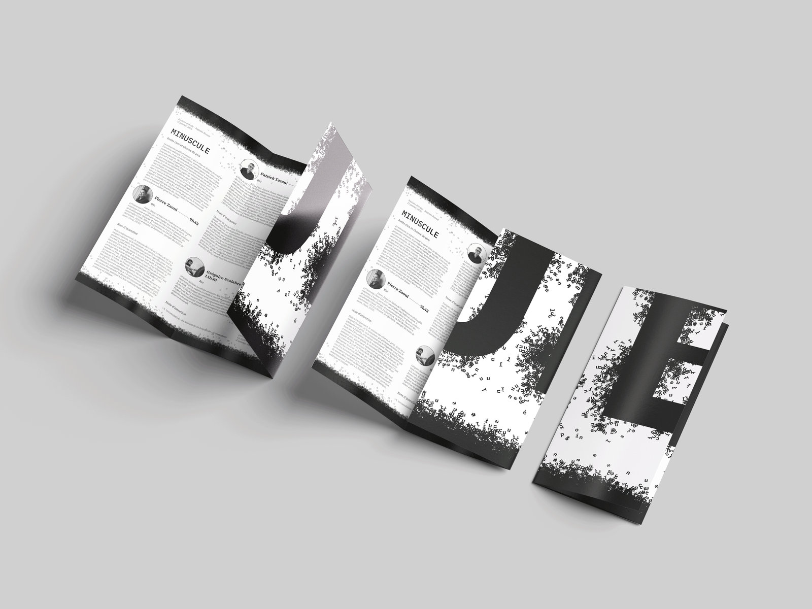
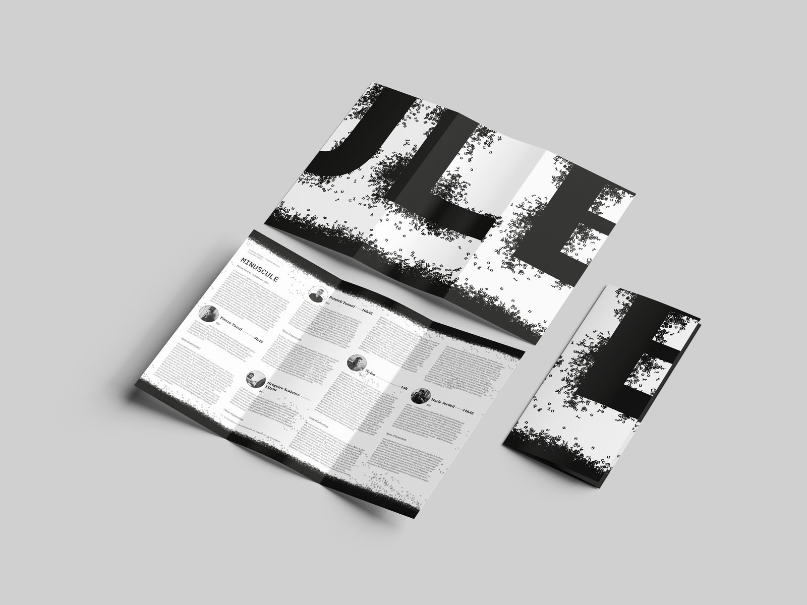
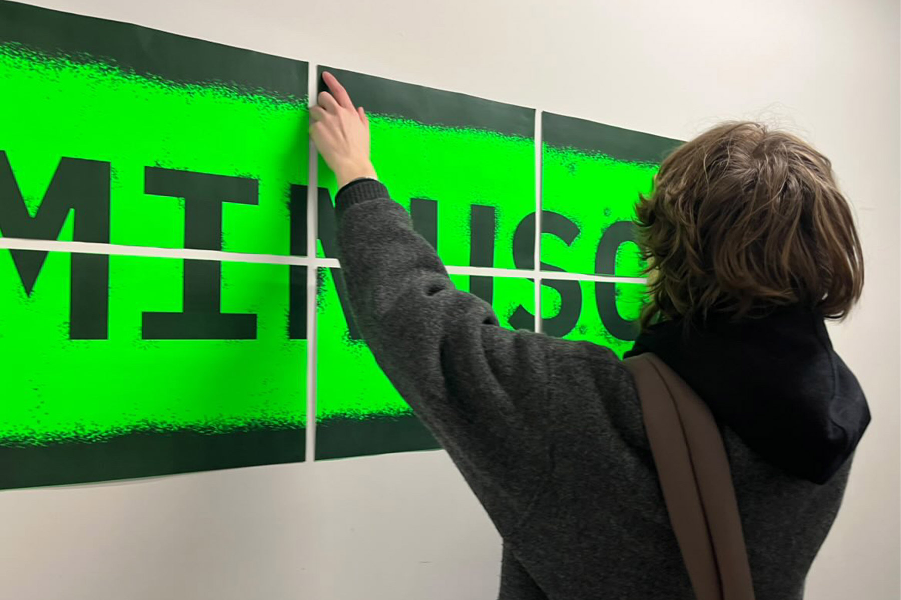
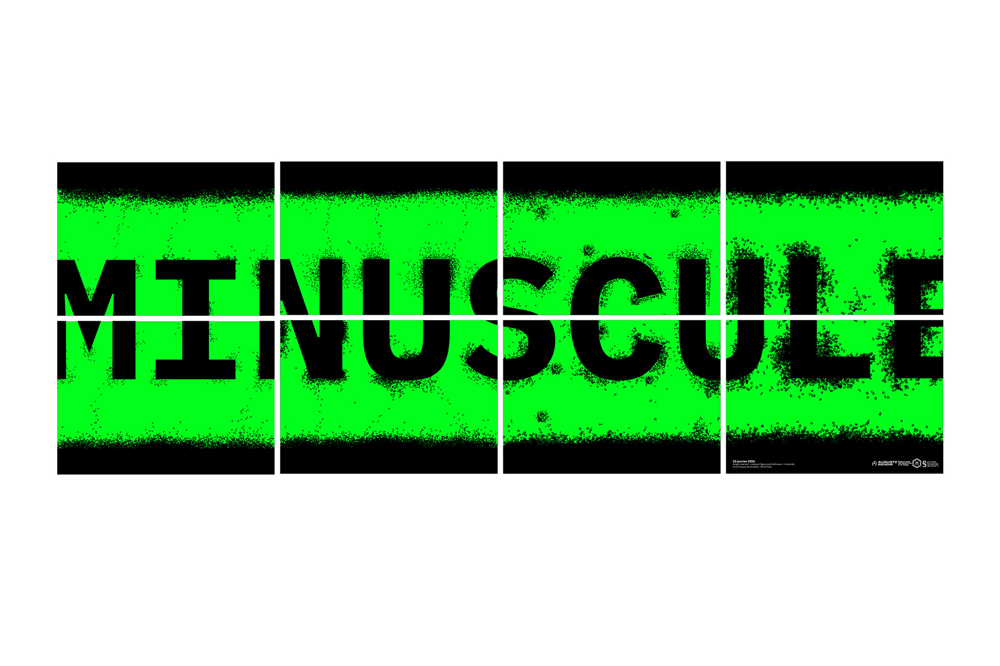

Dans le cadre de la journée de conférences étudiante organisé par l’ELMAD Auguste Renoir et l’université Paris-Saclay, il convenait de réfléchir à la communication de l’évenement.
D’abord, il s’agissait d’explorer le thème «minuscule». Quoi de mieux que d’aborder cette thématique à travers la démesure. Rendre l’humain à plus petite échelle que le minuscule pour laisser place à la redécouverte. Au pied de la lettre, le «minuscule» est devenu «les minuscules» de caractères.



